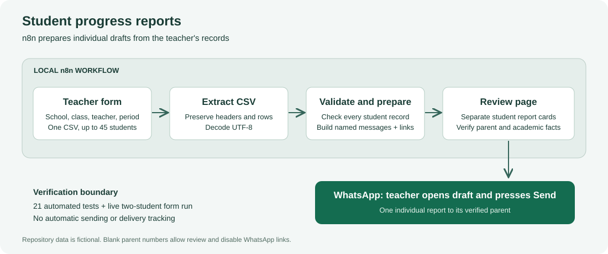

College Project Report
| Submission detail | To be completed by the student |
|---|---|
| Submitted by | [Student name] |
| Roll / registration number | [Roll number] |
| Programme / course | [Programme and course] |
| Department | [Department name] |
| College / university | [Institution name] |
| Project supervisor | [Supervisor name] |
| Academic year / semester | [Academic year and semester] |
| Submission date | [Submission date] |
Implementation: n8n, JavaScript, CSV, HTML/CSS, and Docker Compose.
Verification recorded: 17 October 2026.
Submission note: Replace all bracketed identification fields before submission. This document reports the implemented system and observed tests; it does not assert a signed declaration, supervisor approval, or an institution-specific certification.
Regular communication between a teacher and parents requires combining student identity, homework completion, examination results, and teacher observations into clear individual messages. Repeating this work manually can lead to inconsistent formatting, omitted information, or a report being associated with the wrong student. This project implements a structured reporting workflow that prepares separate student progress messages from a teacher-supplied CSV file.
The teacher enters the school, class, teacher name, and reporting period in an n8n form and uploads records for up to 45 students. Built-in n8n nodes extract the CSV, execute a dependency-free JavaScript report engine, and display a teacher-only review page. The engine validates the batch, preserves student-to-parent mapping, calculates pending homework, reproduces recorded exam results and concerns, and prepares an individual WhatsApp click-to-chat draft link when a parent number is supplied. The teacher verifies the recipient and sends each message inside WhatsApp.
The implementation uses deterministic templates rather than a language model because the required facts are already structured. Blank academic data is explicitly reported as Not recorded. Automated verification comprises 21 passing tests, including full 45-student mapping, malformed input rejection, output escaping, Unicode preservation, and execution of the exact embedded workflow code. A live n8n 2.43.7 run accepted the two-student example CSV and displayed two correct report cards. The example phone numbers were intentionally blank, so no WhatsApp links were created and no messages were sent.
The resulting prototype demonstrates repeatable report preparation and explicit teacher review. It does not provide unattended sending, delivery confirmation, historical student records, or evidence of measured workload reduction.
Keywords: n8n, workflow automation, student progress, CSV validation, JavaScript, parent communication, WhatsApp drafts.
The repository also includes an installation/user guide, architecture notes, a detailed test record, and a demonstration/viva guide.
Teachers often keep homework completion counts, marks, and observations in spreadsheets. Parent communication requires turning these records into individual messages that identify the student, summarize the current period, and explain any requested support. Even when the information already exists, repeatedly copying it into separate chats requires attention to both content and recipient.
Workflow automation can connect data collection, validation, processing, and presentation. In this project, n8n supplies the teacher form and execution environment, while a JavaScript module implements explicit reporting rules. The final action remains under teacher control: the system opens an addressed draft, and the teacher presses Send in WhatsApp.
The project explores a practical automation problem with a small, testable scope. Its primary concern is reliable transformation of supplied facts. It avoids generating judgments about a student that were not present in the teacher's records. It also makes incomplete records visible rather than silently replacing them with zero marks or statements that no concerns exist.
The solution accepts one class CSV and four form settings. It validates the full batch before preparing reports, renders one review card per student, and creates one optional chat link per record. A shared source module is embedded into the importable workflow by a builder script, allowing local tests to exercise the same logic that runs in n8n.
The repository contains the runnable workflow, local runtime configuration, fictional sample data, tests, an offline preview, and the documentation needed to reproduce the demonstration.
Prepare individual parent-facing progress reports from structured teacher records while preserving student identity, recorded academic facts, and recipient details. Identify invalid or incomplete data before a teacher opens the reports for sending.
The project contributes an implemented reporting workflow and an explicit validation approach for a small class batch. Its educational value includes data transformation, workflow orchestration, input validation, web output handling, reproducible builds, and boundary-aware verification. It does not claim a novel messaging protocol or an evaluated improvement in educational outcomes.
The prototype is successful when a valid sample upload produces correctly separated reports, invalid records fail with actionable errors, the exported workflow contains the tested engine, and missing phones do not create contact links. Real-world delivery requires a separate recipient-assisted check and is not part of the observed result.
| ID | Requirement | Implemented behavior |
|---|---|---|
| FR1 | Collect reporting context | Required school, class, teacher, and reporting period. |
| FR2 | Accept class records | One CSV upload with a header and 1–45 nonblank student rows. |
| FR3 | Validate the batch | Stop on invalid settings, headers, rows, IDs, counts, or nonempty phone values. |
| FR4 | Generate report content | One fact-based message per student. |
| FR5 | Support incomplete records | Mark absent academic information Not recorded; disable links for blank phones. |
| FR6 | Support recipient review | Show student and parent details beside each message. |
| FR7 | Prepare chat drafts | Generate encoded click-to-chat URLs for formatted phone numbers. |
| FR8 | Keep teacher control | Require the teacher to open, verify, and send each message. |
The engine should be readable, dependency-free, and deterministic. The source and embedded Code node should remain aligned. HTML output should escape dynamic values, and URL encoding should preserve Unicode and punctuation. The runtime should preserve its configuration between container restarts. Repository examples should contain no real student contact information.
| Item | Purpose / observed version |
|---|---|
| Host operating system | Windows, used for the recorded local demonstration. |
| Docker and Compose | Host the supplied n8n container and named volume. |
| n8n | Pinned image version 2.43.7. |
| Node.js | Version 22.19.0 observed for local verification; repository requires 22 or newer. |
| Browser | Open the teacher form, review output, and optionally WhatsApp Web. |
| WhatsApp account | Needed for real sending; not used in the example run. |
The project was not hardware-benchmarked, so it does not state a measured minimum RAM, CPU, throughput, or response-time guarantee. Docker provides the runtime used by n8n; the host Node installation is used for repository scripts and tests.
The implementation prepares reports from the current upload. It does not authenticate individual teachers within a separate application, maintain student history, calculate unprovided grades, search unstructured documents, manage WhatsApp sessions, or record delivery events.
A teacher reads each spreadsheet record, writes or copies a message, locates the parent chat, checks the student and recipient, and sends the report. Repetitive formatting and movement between records create opportunities for omission or mismatching. These are motivating risks; no formal observational study was conducted for this project.

The design has four processing nodes: Form Trigger, Extract from File, Code, and Form completion. A fifth sticky-note node contains instructions in the editor and has no processing role. The teacher browser submits inputs to n8n and later opens WhatsApp outside the workflow.
student_csv.Keeping the CSV header as data allows duplicate column names to be rejected before object conversion could hide them. Using unique student IDs prevents repeated names from becoming the only identity mechanism. Keeping the student's name, ID, parent, and phone in the same validated record reduces accidental cross-record mapping.
Batch validation precedes message generation. A bad row produces a correction request rather than a partial class result. Shared parent phone numbers are allowed because siblings may legitimately use the same contact, but the page highlights the case for review.
The engine scans records to validate IDs, build reports, count shared phones, and render cards. These passes are linear in the number of records, with output work proportional to the total text length. Report objects and HTML are held in memory for the batch. The implemented 45-student limit and text limits bound the intended input; they are application limits rather than measured infrastructure capacity.
| Column | Meaning | Rule |
|---|---|---|
student_id | Stable student or roll identifier | Required, unique ignoring letter case. |
student_name | Student name | Required text. |
parent_name | Parent or guardian name | Optional column and value. |
parent_phone | Full international contact number | Required column; blank disables draft link. |
homework_completed | Completed assignments | Whole number or blank with assigned count. |
homework_assigned | Assigned assignments | Whole number or blank with completed count. |
exam_results | Recorded subject results | Text; semicolons/newlines separate subjects. |
teacher_concerns | Recorded observations | Text; blank means Not recorded. |
parent_action | Requested parent support | Optional column and value. |
All columns except parent_name and parent_action must be present. Headers may be reordered. Missing required, duplicate, and unknown headers are rejected. A UTF-8 byte-order mark and surrounding header whitespace are handled. Completely blank rows are ignored; other rows must have the expected cell count.
Student names, IDs, and parent names are limited to 120 characters. Reporting settings are required and limited to 160 characters each. Results, concerns, and parent actions are limited to 1,000 characters each. Unsupported control characters are rejected.
Both homework counts must be present or both absent. Present values must be nonnegative whole numbers, and completed work cannot exceed assigned work. The pending value is assigned minus completed. Zero assigned and zero completed means no homework was assigned; missing counts do not mean zero.
The phone parser removes supported formatting and a leading international prefix. It then requires 8–15 digits starting with a nonzero digit. This verifies the implementation's format rule only. It cannot prove the country code is appropriate, establish who owns a number, or determine whether WhatsApp is registered.
The result contains student_count, ready_count, reports, and html. Each report includes student ID/name, parent name/phone, message, whatsapp_url, and a status of ready_for_review or missing_phone. These statuses describe preparation only and never indicate successful sending.
The engine resides in src/report-engine.js. buildReports(table, settings) is its entry point. Helpers normalize text, validate phone formatting and homework counts, parse the table, create student records, prepare messages, escape HTML, and render the review page.
Messages include a title, school/class/period, greeting, student name and ID, homework summary, exam results, teacher concerns, optional support request, and teacher sign-off. Recorded results are reproduced as supplied. No model invents advice or converts scores into grades not present in the input.
scripts/build-workflow.js reads the engine source and embeds it directly into the n8n Code node. It writes student-reports.n8n.json and an anonymized offline preview. The JSON starts inactive so importing it elsewhere does not automatically expose a live form.
The Code node reads the form settings using the form node name and gathers each extraction item's json.row. The completion node renders the engine's html output. The tests verify these connections and run the exact exported code with n8n-shaped objects.
A nonblank validated parent number produces a URL with the structure https://wa.me/<number>?text=<encoded message>. The engine uses encodeURIComponent for the message. Unicode names, newlines, and characters such as ampersands must survive decoding back to the original message. Click-to-chat behavior is described by the official WhatsApp reference [1].
The link is a draft launcher. Opening it does not send the message. The application has no WhatsApp API credential, message queue, or callback that could report delivery.
Dynamic settings and student values are escaped before insertion into the review HTML. This prevents supplied markup from becoming executable HTML in the generated page. A shared-phone notice appears when more than one record has the same nonblank phone number. Missing phones show an explanatory prompt instead of an active link.
compose.yaml pins n8n 2.43.7, binds the host port to localhost, and persists data in n8n_data. The source repository has no runtime npm dependencies. Node.js built-in modules provide the builder and test runner. A separate report builder converts this Markdown document into printable HTML and optionally uses a local browser to save PDF.
Testing combines a dependency-free automated suite with an observed hosted execution. The suite covers report behavior and export consistency. The integration run covers actual CSV extraction and completion rendering in n8n. These layers support different claims and should not be confused with successful WhatsApp delivery.
Run node scripts/build-workflow.js followed by node --test. On the recorded verification date, all 21 tests passed, with zero failures or skips, using Node.js 22.19.0.
| Test area | Acceptance checked | Result |
|---|---|---|
| Message content | Correct names, counts, marks, concerns, and support text | Passed |
| Class mapping | All 45 students remain associated with their own record | Passed |
| Batch boundaries | 46 records rejected; no silent truncation | Passed |
| Identity and schema | Missing/duplicate IDs and invalid headers rejected | Passed |
| Academic counts | Missing pairs, fractions, negatives, impossible totals rejected | Passed |
| Optional data | Missing facts explicit; blank phones produce drafts without links | Passed |
| Encoding and output | Unicode preserved; HTML escaped | Passed |
| Export execution | Exact embedded Code node runs with n8n-shaped inputs | Passed |
| Offline example | Fictional students and no contact links | Passed |
The workflow was imported and published in a local Docker-hosted n8n 2.43.7 instance. Its production form accepted a multipart upload containing examples/students.csv and the settings Example School, 6 A, Example Teacher, and Example week. The execution returned a result address, and the generated completion page was retrieved and checked.
The result contained two separate report cards and message blocks. Checks confirmed Aarav/STU001/Parent One and Sita/STU002/Parent Two, different homework summaries, and the respective mathematics results of 38/50 and 46/50. Both phone fields were blank, and the page contained zero WhatsApp links.
The 45-student case was tested in the engine, not through a hosted 45-row upload. No real parent number, WhatsApp send action, delivery receipt, multi-user deployment, load benchmark, or school-based user study was observed. The repository test record documents these boundaries in more detail.
| Student | Parent | Homework | Mathematics | Draft link |
|---|---|---|---|---|
| Aarav (example), STU001 | Parent One | 4/5 complete; 1 pending | 38/50 | Disabled: phone blank |
| Sita (example), STU002 | Parent Two | 5/5 complete; 0 pending | 46/50 | Disabled: phone blank |
The two records produced separate progress messages and maintained the correct parent association. The review page exposed the missing-phone condition rather than inventing contacts or enabling invalid links. The offline preview can be opened from examples/report-preview.html to inspect the same report presentation without starting n8n.
The results show that the implemented path can collect form settings, extract uploaded records, validate them, and display individual reports in the observed environment. The automated suite adds evidence for boundary cases and mapping across 45 students. It does not establish operational reliability under every input, deployment, or browser configuration.
Deterministic generation is appropriate for this scope because the desired output is a consistent presentation of recorded facts. A retrieval or generative model stage would add components without addressing a demonstrated requirement. Human verification remains necessary because correct software mapping cannot establish that a supplied phone number belongs to the intended parent.
The deliverables are the importable workflow, engine source, builder scripts, Docker configuration, sample CSV, offline preview, 21-test suite, architecture diagram, user guide, verification record, demo/viva guide, and project report in editable Markdown, browser-readable HTML, and PDF formats.
Student records, marks, concerns, and parent phone numbers should be handled only for the intended reporting purpose. This repository contains fictional example records with blank contacts. Real class files should remain outside the repository or in its ignored private/ directory.
The project does not create a separate student database, but n8n may retain uploaded files, submissions, and generated output in execution storage. Local execution therefore does not mean that data is never stored. Operators need appropriate account access, retention settings, and backup practices for actual use.
The class review page is for the teacher because it contains multiple students. Parents should receive only their own student's report. Shared contact numbers are flagged, and each chat recipient must be checked inside WhatsApp before sending. Draft links also contain the message text, so they should be treated as student information when copied or shared.
The supplied Compose binding makes n8n available on the host computer's localhost interface. Remote use requires a separate deployment decision and configuration for HTTPS and form access control. The source upload to GitHub does not deploy the workflow or publish a hosted teacher portal.
Runtime captures, signed result URLs, credentials, .env files, logs, and n8n databases are excluded from source control. The workflow export contains no account credentials and is inactive on import.
Future work could add configurable class limits, an authenticated teacher portal, a historical record store, language-specific templates, retention controls, and more hosted integration scenarios. Any automated messaging extension should be designed around an explicitly authorized official integration and validated delivery events. These are proposed changes rather than completed features.
Further evaluation could compare teacher preparation time using a defined manual baseline, test representative school spreadsheets, assess usability with consenting participants, and verify real draft delivery with a consenting recipient. Such evaluation would support stronger conclusions than the current technical demonstration alone.
The project implements a reproducible n8n workflow for preparing individual student progress reports from structured teacher records. Its JavaScript engine validates the full class batch, preserves student-to-parent association, presents missing information explicitly, and prepares optional WhatsApp drafts while leaving the final sending action under teacher control.
Twenty-one automated tests passed, and a live local n8n execution generated the expected two-student reports from the example upload. The observed result supports the report-preparation path. It does not establish WhatsApp delivery or production readiness for a school deployment.
The implementation provides a practical college project demonstrating workflow orchestration, data validation, deterministic message generation, HTML handling, and reproducible verification. The repository documentation and editable report support further development and a transparent project demonstration.
References identify the technologies and behaviors used in the project. Implementation and test outcomes are supported by the repository source, test suite, and recorded local execution rather than by external documentation.
src/report-engine.js, scripts/build-workflow.js, and student-reports.n8n.json.tests/report-engine.test.js and docs/TESTING.md.docker compose up -dOpen http://localhost:5678, complete the owner setup if needed, import student-reports.n8n.json, and save the workflow.
Execute the workflow and open the teacher form, or use the published local production form. Enter Example School, 6 A, Example Teacher, and Example week; upload examples/students.csv; submit and compare both student reports. Explain that blank phone numbers deliberately disable the draft links.
node scripts/build-workflow.js
node --testnode scripts/build-report.js
node scripts/build-report.js --pdfThe PDF command requires a local Chrome or Edge installation. Alternatively, print the generated HTML to PDF through the browser. Fill in the cover details in the Markdown source first.
docker compose stopFor presentation timing and questions, see docs/DEMO_AND_VIVA.md. For detailed installation and troubleshooting, see docs/USER_GUIDE.md.